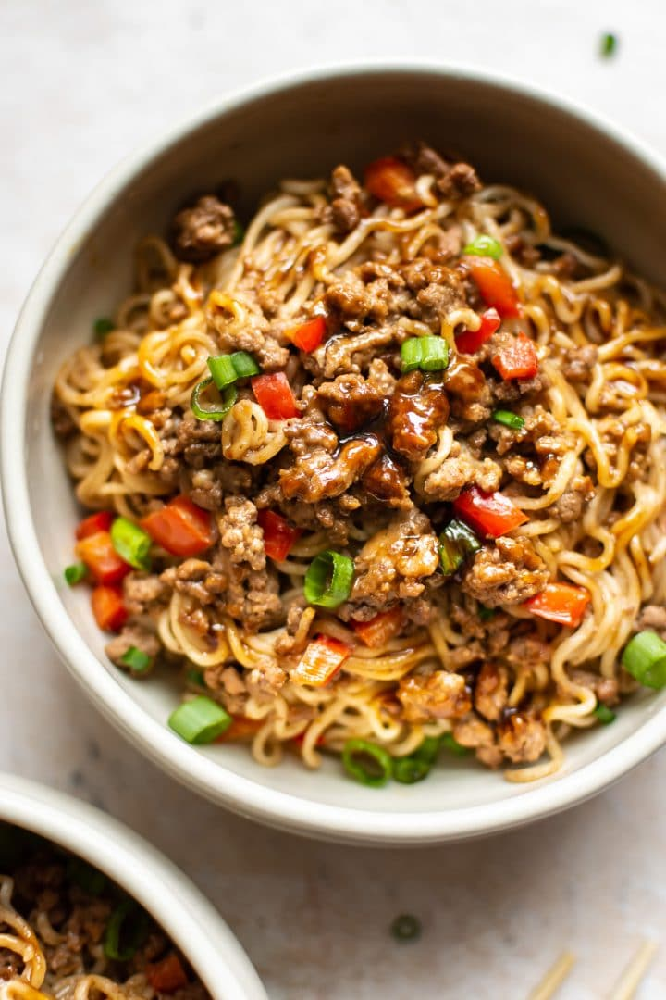

Stir Fry Style Ramen Recipe

Description
For those who aren't in the mood for a broth dish or those who aren't good with broths (such as myself), this is a great way to make your own healthier ramen without the flavor package! This recipe creates 1 to 2 portions.
Ingridients
- 2 cups water
- ground black pepper to taste
- salt to taste
- 1 (3 ounce) package instant ramen noodles
- 1 tablespoon soy sauce, divided, or to taste
- vegetable oil
- 1/2 onion, chopped
- 1 cup bean sprouts
- 1/2 pound cooked and peeled shrimp, or to taste
- 1 pinch garlic powder, or to taste
- 1 head bok choy, chopped
- 1 green onion
Steps
- Bring water to a boil in a saucepan. Add salt and black pepper. Add ramen, discarding the flavor packet. Cook for 2 minutes. Add 1/4 teaspoon soy sauce. Cook 3 minutes more and drain ramen.
- Heat oil in a nonstick pan over medium heat. Add onion and season with salt and black pepper; cook about 1 minute. Add bean sprouts and 1/4 teaspoon soy sauce; cook and stir for 1 minute. Add shrimp and season with garlic powder and black pepper; cook until shrimp are pink, about 2 minutes more.
- Stir cooked ramen noodles into the pan with the shrimp. Add additional soy sauce to taste. Add bok choy and green onion. Simmer until vegetables are crisp-tender, about 5 minutes more.